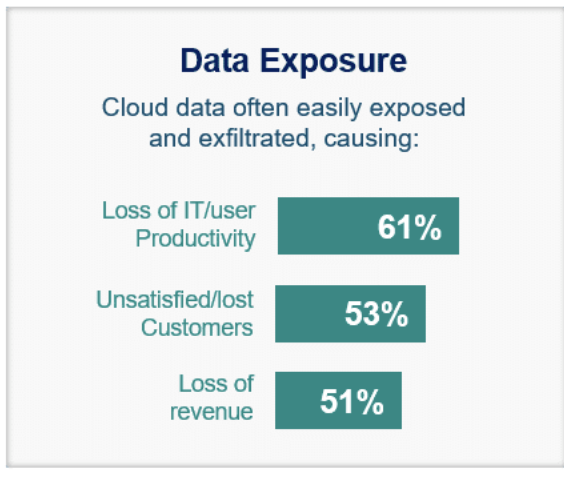
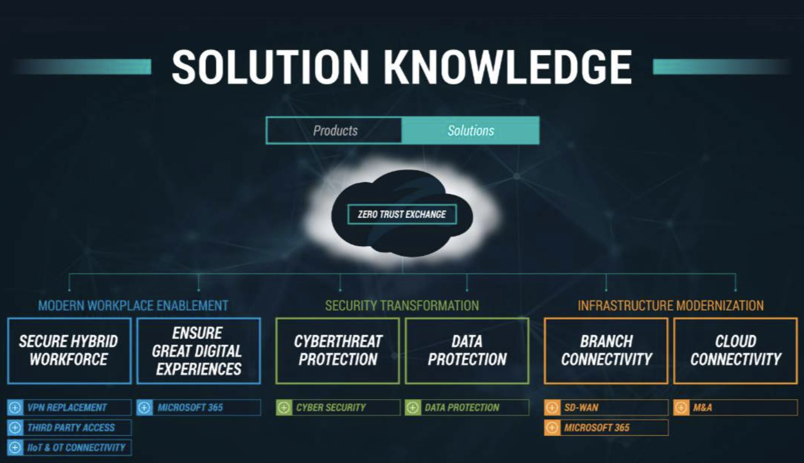
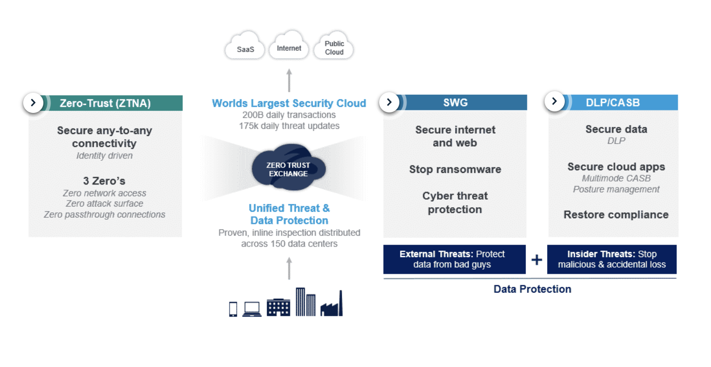
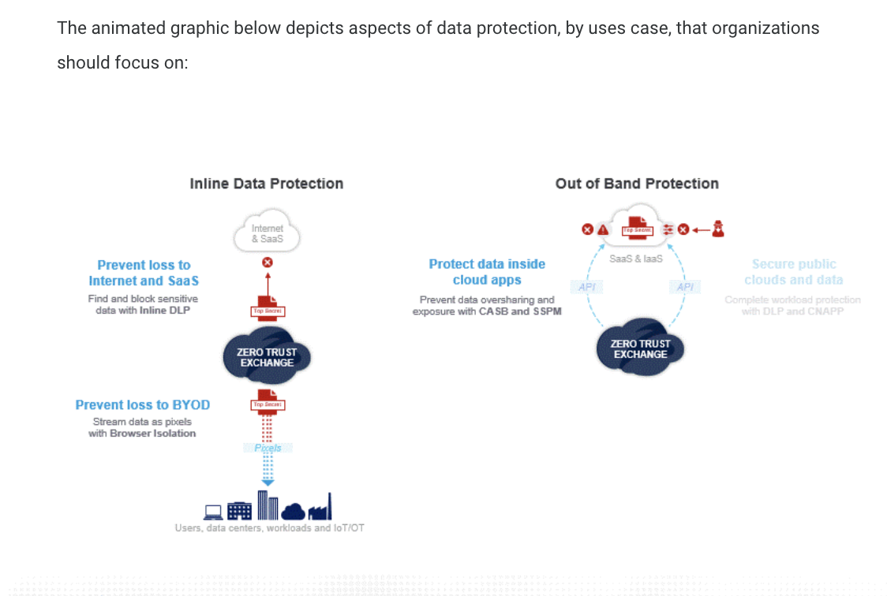
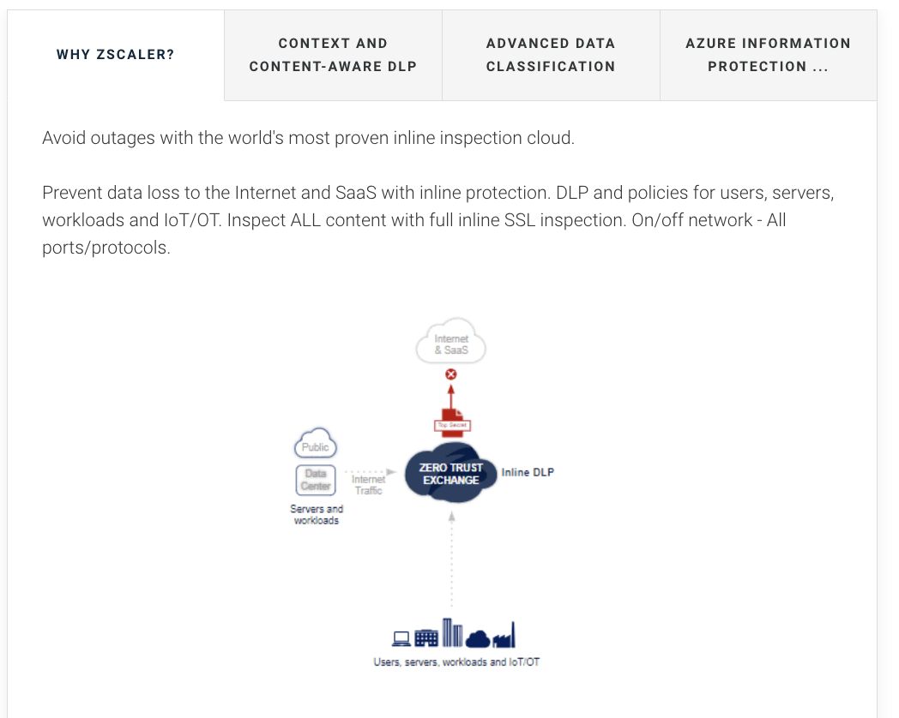
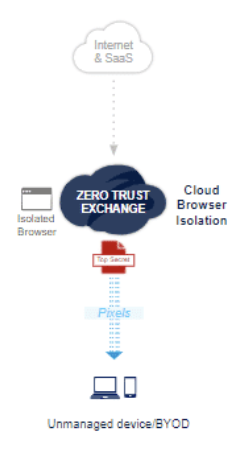

Why data protection matters now — and how Zscaler solves it
"Data is your most valuable asset — and the cloud has scattered it everywhere traditional security can't follow."
💭THINK FIRST · THE DATA PROTECTION PROBLEM
Data protection used to mean locking data inside the corporate perimeter. But SaaS adoption has placed that data in dozens of cloud services, accessed from any device, over the internet — far from traditional security controls. The tools built for the data-centre era simply weren't designed for this.
Why can't traditional perimeter security protect data once it moves to SaaS apps and cloud platforms?
If 61% of organisations say their network security can't scale to the cloud, what does that mean for their actual data loss risk?
Q1 — MODEL ANSWER
Traditional security appliances sit on-premise at the network edge — they inspect traffic that passes through the corporate gateway. Once users access SaaS apps over the internet on personal or mobile devices, that traffic never touches the gateway. Security appliances weren't designed to follow users; they were designed to protect a fixed perimeter, and the perimeter has effectively dissolved.
Q2 — MODEL ANSWER
If an organisation's security can't scale to the cloud, sensitive data flowing to SaaS apps is effectively uninspected. Employees can upload confidential files to unsanctioned apps, share data externally, or have credentials stolen via encrypted traffic — and the security team has no visibility to detect or block it. The 61% figure shows this isn't a fringe problem; it's the majority of enterprises operating blind.
SECTION 1
The Data Protection Problem
Data protection means safeguarding important information from compromise or loss. What changed is where data now lives. The widespread adoption of SaaS and public cloud apps has made data widely distributed — scattered across dozens of services, accessed from anywhere, by any device — and impossible to fully secure with legacy on-premises appliances.
Three Key Challenges
In a survey of over 500 IT and security leaders, three cloud data challenges stood out as the most acute:
DISTRIBUTED DATA
61% say security can't scale
Cloud apps need data to work — but that moves it out of data centres and beyond the reach of traditional security appliances. Most security wasn't built for cloud scale.
MOBILITY REQUIREMENTS
45% struggle with BYOD
Remote users and BYOD devices access data off-network via the internet — away from any traditional inspection point. Unmanaged devices can download and retain sensitive data.
DATA EXPOSURE
Cloud data easily exfiltrated
Cloud platforms enable sharing — but also make data easy to expose publicly or ingest malicious files. Misconfigurations are a leading cause of major breaches.

Data exposure causes cascading business damage: 61% of organisations report IT/user productivity loss, 53% lost or unsatisfied customers, and 51% revenue loss — all from cloud data that's easily exposed or exfiltrated. (Zscaler Data@Risk Report, 500+ IT and security leaders, North America and EMEA.)
Why Traditional Approaches No Longer Work
Even organisations with mature security programs find their existing tools inadequate. Four fundamental reasons:
Unable to follow users — cloud apps are accessed over the internet, away from an organisation's traditional network and data controls. Security tools at the gateway simply can't see this traffic.
Limited SSL inspection — most traffic is encrypted, but traditional appliances can't inspect SSL/TLS at scale, leaving organisations blind to threats and data loss within encrypted sessions.
Unknown state of compliance — with apps spread across multiple cloud services and teams, understanding where sensitive data lives and who has access to it has become practically impossible.
Missing the big picture — point products (a CASB here, a DLP there) create management silos and policy gaps. There's no unified view of what data is at risk across all channels.
🧠
MENTAL NOTE
3 cloud data challenges: Distributed Data (61% can't scale security), Mobility/BYOD (45% struggling), Data Exposure (61% productivity loss · 53% lost customers · 51% revenue loss). Traditional approaches fail on 4 counts: can't follow users, limited SSL inspection, unknown compliance state, missing unified visibility.
ASK A QUESTION
ADD A NOTE
💭THINK FIRST · THE ZSCALER SOLUTION
82% of organisations view a zero-trust approach as critical to data protection. The response to point-product complexity is a unified Security Service Edge (SSE) platform — combining ZTNA, SWG, and CASB under one policy engine. But simply combining products isn't enough: the architecture must sit inline to inspect every session.
Why isn't a Secure Web Gateway alone enough for full data protection — what does DLP+CASB add that SWG can't provide?
What's the real cost of deploying separate best-of-breed point solutions for CASB, DLP, and SWG instead of a unified platform?
Q1 — MODEL ANSWER
SWG stops external threats — malware, ransomware, and bad actors trying to get in. But it doesn't address insider threats: an employee exfiltrating sensitive data to an unsanctioned app, or a cloud storage misconfiguration exposing private data. DLP inspects the content of outbound traffic to catch data leakage, and CASB controls which cloud apps can be accessed and what users can do inside them. All three are required for complete coverage.
Q2 — MODEL ANSWER
Separate point solutions each require their own DLP policy, their own management console, and their own integration work — creating policy gaps at the handoff points and operational overhead as teams manage multiple tools. A unified platform means one DLP policy applies across all channels, one console to manage, and no gaps between products. It also enables unlimited SSL inspection at cloud scale, which hardware appliances can't sustain.
SECTION 2
Why Zscaler: The Unified SSE Platform
Zscaler Data Protection is a unified solution designed to help organisations protect their sensitive data across all cloud channels. With unified protections across DLP, CASB, CSPM, and Cloud Browser Isolation, organisations can secure cloud data with a holistic approach that reduces risk, complexity, and cost. Many competitors offer CASB or DLP as point solutions — focused on a single application or deployment — and this creates data protection gaps.

The Zscaler Solution Knowledge map: the Zero Trust Exchange sits at the centre connecting three pillars — Modern Workplace Enablement (secure hybrid workforce), Security Transformation (cyberthreat and data protection), and Infrastructure Modernization (branch and cloud connectivity).
The SSE Platform: ZTNA, SWG, and DLP/CASB
As a unified SSE (Security Service Edge) platform — the security subset of Gartner's SASE framework — Zscaler delivers three core capabilities addressing different data protection dimensions:
ZTNA
Zero Trust Network Access
Secures any-to-any connectivity. Identity-driven, least-privileged access for secure remote access — users only reach what they're authorised for, verified every session.
SWG
Secure Web Gateway
Provides secure internet and web access — designed to stop ransomware and advanced external threats. Key for stopping bad actors getting in.
DLP / CASB
Data Loss Prevention + CASB
Data protection for data in motion (headed to the cloud) and at rest (sitting in the cloud). Key for stopping insider threats and data exfiltration.
Both SWG and DLP/CASB are needed: SWG stops external threats, DLP and CASB stop insider threats. Zscaler offers a platform that delivers both through one policy, one console, one cloud service.

The SSE platform: ZTNA handles identity-driven access, SWG blocks external threats (ransomware, bad actors), and DLP/CASB addresses insider threats and data exposure — all enforced through the Zero Trust Exchange at cloud scale.
What Sets Zscaler Apart
Unified data loss protection — one policy across all cloud channels from a single platform. No gap between tools.
Better risk reduction — unlimited SSL inspection at cloud scale finds more potential data leakage than hardware-constrained appliances ever could.
Reduced cost and complexity — consolidates point solutions. No separate CASB, DLP, and SWG consoles to manage and integrate.
Proven and trusted — world's largest security cloud (200B+ daily transactions), Gartner Magic Quadrant leader.
🧠
MENTAL NOTE
82% of orgs view zero trust as critical to data protection. SSE = SWG (external threats) + DLP/CASB (insider threats) + ZTNA (identity-driven access). SWG stops attackers getting in; DLP+CASB stop data getting out. Zscaler differentiators: unified policy, unlimited SSL inspection at cloud scale, platform consolidation, Gartner leader.
ASK A QUESTION
ADD A NOTE
💭THINK FIRST · THE 4 CORE USE CASES
Zscaler protects data across four distinct channels: internet-bound traffic, BYOD devices, data already inside SaaS apps, and public cloud infrastructure. Each channel requires a different technical approach — inline inspection, pixel streaming, API scanning, or posture assessment — because data moves (or sits) differently in each context.
Why does BYOD protection require Cloud Browser Isolation rather than a standard DLP policy applied to traffic? What makes unmanaged devices fundamentally different?
What's the difference between Real-time CASB and Scanning CASB — and why does an organisation need both?
Q1 — MODEL ANSWER
On a managed device you can deploy a Zscaler client connector that routes all traffic through the Zero Trust Exchange for DLP inspection. On a BYOD device — an employee's personal phone or laptop — you can't install agents or enforce MDM profiles without the user's consent. Cloud Browser Isolation solves this agentlessly: web content runs in an isolated cloud browser, and only rendered pixels stream to the device. The raw data never lands on the unmanaged device, eliminating the exfiltration risk without requiring any software installation.
Q2 — MODEL ANSWER
Real-time CASB sits in the traffic path and intercepts every upload and download as it happens — it can block a sensitive file from being uploaded to an unsanctioned app in real time. Scanning CASB connects via API to SaaS apps and scans data already at rest inside them. These are complementary: Real-time CASB catches new data in motion, while Scanning CASB finds data that was uploaded before CASB was deployed or that arrived via internal collaboration rather than a direct user upload.
SECTION 3
The 4 Core Use Cases
Zscaler provides data protection for users, workloads, servers, and IoT/OT across four core use cases — spanning two delivery modes: Inline Data Protection (traffic flows through the Zero Trust Exchange for real-time inspection) and Out-of-Band Protection (APIs connect to cloud apps to scan and remediate data already at rest).

The two protection modes: Inline (left) uses the Zero Trust Exchange to intercept traffic in real time for DLP and Browser Isolation. Out-of-Band (right) uses APIs to scan and remediate data already at rest in SaaS apps and public cloud platforms.
Use Case 1 — Prevent Loss to Internet & SaaS (Inline DLP)
Inline DLP inspects ALL content — including full SSL decryption — for users, servers, workloads, and IoT/OT, on and off network, across all ports and protocols. Three advanced classification methods make it precise:
Exact Data Match (EDM) — alert only on your specific customer data (e.g. your company's actual credit card numbers, not any credit card number).
Index Document Match (IDM) — fingerprint a specific form or template and detect any other instance of it being uploaded anywhere.
Optical Character Recognition (OCR) — lift text from images and screenshots to prevent sensitive data hidden in image files from bypassing DLP.
Azure AIP Integration — read Microsoft sensitivity labels from tagged documents; create policies based on labels; automatically tag data found in OneDrive.

Inline DLP: traffic from users, servers, workloads, and IoT/OT flows through the Zero Trust Exchange, which inspects and blocks any sensitive content before it reaches internet or SaaS destinations — all with full SSL inspection.
Use Case 2 — Prevent Loss to BYOD (Cloud Browser Isolation)
Most CASB vendors solve BYOD with reverse proxies — but these have two major limitations: they break some apps, and must be built app-by-app. Zscaler uses Cloud Browser Isolation instead.
An isolated browser runs inside the Zero Trust Exchange. Cloud apps render there; only pixels stream to the unmanaged device. The user can fully interact with the app — but can't copy, print, or download the actual data. Works agentlessly on any browser-based app.

Cloud Browser Isolation: web content executes inside an isolated cloud browser in the Zero Trust Exchange. Only pixel streams reach the BYOD device — actual data (files, clipboard contents) never lands on the unmanaged endpoint.
Use Case 3 — Control Data Inside Cloud Apps (Multi-mode CASB)
Zscaler is a multi-mode CASB covering three delivery modes:
Real-time (inline) CASB — full visibility into risky apps and Shadow IT. Zscaler catalogs 8,500+ cloud apps with 25 risk attributes each (SSL version, breach history, terms of service, etc.) — score apps and block uploads to unsanctioned destinations in real time.
Scanning (out-of-band) CASB — connects via API to SaaS apps to scan data at rest. Find sensitive data, control risky external sharing, and use Zscaler threat engines (Cloud Sandbox) to detect malware ingested into apps — then remediate or quarantine.
BYOD CASB — delivered through Cloud Browser Isolation (Use Case 2).
Analogy
Real-time CASB is like a security guard at a club entrance checking every bag as guests arrive — nothing gets in or out without inspection, and a banned item is turned away on the spot. Scanning CASB is like a hotel manager doing room inspections after guests have already checked in — reviewing what's already inside and correcting any policy violations found there. You need the door guard to stop things in real time and the room check to catch what was already there.
📷 A1.png — add this image to the folder
Two-panel cartoon infographic: Left panel labelled "Real-time CASB — Inline" shows a friendly security guard at a club entrance checking a bag, a glowing red blocked badge on one item being turned away, label "Blocks data in motion"; Right panel labelled "Scanning CASB — API" shows a hotel manager with a clipboard doing a thorough room inspection inside an occupied room, checking drawers and surfaces, label "Finds data at rest"; both in clean cartoon style with warm colours, minimal text labels only where needed, educational infographic feel, modern tech-analogy aesthetic
Use Case 4 — Secure Public Cloud Data (CSPM & CIEM)
According to Gartner, 99% of cloud security incidents are the customer's own fault — primarily misconfiguration and excessive permissions. Zscaler's public cloud protection addresses this out-of-band:
CIEM — Scans SaaS and public clouds for unnecessary risky identity and access permissions using AI/ML. Identifies risky accounts, guides remediation to close entitlement gaps.
CNAPP — Emerging Gartner-defined category that unifies CSPM, CIEM, and workload protection to identify and adapt to risk in cloud-native applications and infrastructure.
🧠
MENTAL NOTE
4 use cases: (1) Inline DLP — internet/SaaS, full SSL inspection, EDM/IDM/OCR/AIP; (2) Cloud Browser Isolation — BYOD, agentless, pixels only; (3) Multi-mode CASB — Real-time (8,500+ app catalog, 25 risk attributes), Scanning (API, data at rest); (4) CSPM/CIEM — misconfigs and excess permissions, 2,500+ policy templates, 16 frameworks. Gartner: 99% of cloud incidents are the customer's own fault (misconfig).
ASK A QUESTION
ADD A NOTE
💭THINK FIRST · DATA PROTECTION GLOSSARY
The data protection space is dense with acronyms that are often confused. CSPM and SSPM sound similar but cover different cloud environments. CIEM sounds like CASB but focuses on identity permissions rather than traffic control. Getting these distinctions right matters in customer conversations and on the exam.
What's the difference between CSPM and SSPM — and why does the distinction matter practically?
SSE is a subset of SASE — what does the other half of SASE cover, and why isn't it part of SSE?
Q1 — MODEL ANSWER
CSPM scans public cloud infrastructure — AWS, Azure, GCP — for misconfigured services (open storage buckets, overly permissive IAM policies). SSPM does the same for SaaS apps — checking whether Microsoft 365, Salesforce, or Slack are configured securely at the app level. The distinction matters because the misconfig risks differ: public cloud risks involve infrastructure settings while SaaS risks involve app-level sharing permissions and integrations. An organisation needs both to cover all cloud environments.
Q2 — MODEL ANSWER
SASE (Secure Access Service Edge) combines two halves: SSE (Security Service Edge) — covering SWG, CASB, and ZTNA — handles security functions. The other half is the network services layer: SD-WAN, network-as-a-service, and WAN optimisation. Gartner separated SSE from SASE because many organisations are buying the security layer now while keeping existing WAN infrastructure, making SSE a meaningful standalone procurement category rather than forcing organisations to replace their entire network simultaneously.
SECTION 4
Data Protection Glossary
A point solution addresses a single use case or challenge — a standalone CASB for one app, a DLP for one channel. Zscaler's integrated platform replaces these with one unified solution covering all channels. Below are the key terms every data protection practitioner needs to know.
DLP
Data Loss Prevention
Inspects and identifies sensitive data within content using predefined or custom dictionaries. Supports EDM, IDM, and OCR for advanced classification.
CASB
Cloud Access Security Broker
Intermediary between users and cloud providers. Inline CASB finds and blocks risky apps; out-of-band CASB uses APIs to inspect and remediate data at rest in cloud apps.
Browser Isolation
Cloud Browser Isolation
Loads pages in a cloud-based isolated browser; streams only pixels to the device. Agentless. Secures BYOD without breaking app functionality or requiring MDM.
CSPM
Cloud Security Posture Mgmt
Automatically scans public cloud platforms (AWS/Azure/GCP) for misconfigurations that lead to breaches and regulatory noncompliance.
SSPM
SaaS Security Posture Mgmt
Automatically scans SaaS cloud apps (M365, Salesforce, etc.) for misconfigurations that lead to breaches and regulatory noncompliance.
CIEM
Cloud Infrastructure Entitlement Mgmt
Scans SaaS and public clouds for unnecessary risky identity and access permissions. Uses AI/ML to flag and remediate excessive entitlements.
SWG
Secure Web Gateway
Protects networks and connected devices from internet-borne threats — ransomware, malware, bad actors. The external-threat pillar of SSE.
ZTNA
Zero Trust Network Access
Evaluates context (identity, location, device health) before granting least-privileged remote access to applications. Replaces VPN.
BYOD
Bring Your Own Device
Policy allowing employees to use personal devices for work. Creates security risk as sensitive data can land on unmanaged endpoints outside IT control.
CNAPP
Cloud Native App Protection Platform
Gartner-defined emerging category: identifies, assesses, prioritises, and adapts to risk in cloud-native applications, infrastructure, and configurations.
SSE
Security Service Edge
The security half of SASE — SWG + CASB + ZTNA. Gartner's Magic Quadrant for SSE defines these as the required components of a complete security service edge offering.
SaaS
Software as a Service
Cloud-hosted software delivered over the internet. The explosion of SaaS adoption distributed enterprise data across dozens of apps outside the traditional perimeter.
i
ZSCALER SASE SUMMARY
Zscaler offers a SASE-based solution that unifies CASB, SWG with DLP, and CSPM to ensure data protection across cloud applications and users — all delivered through the Zero Trust Exchange as a cloud-native service requiring no hardware appliances.